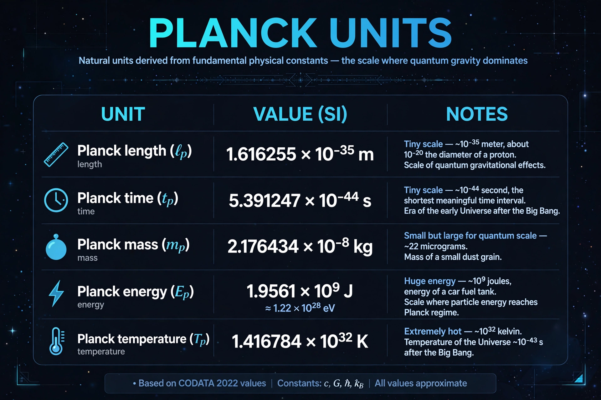

Planck units
| Base constants | c, G, ħ, k_B (and ε₀) |
|---|---|
| Examples | Planck length 1.616 × 10⁻³⁵ m; Planck time 5.39 × 10⁻⁴⁴ s; Planck energy ~2 GJ |
| Proposed | 1899, Max Planck |

[Image: Table of the Planck units with their values and expressions in fundamental constants]In particle physics and physical cosmology, Planck units are a system of units of measurement defined exclusively in terms of four universal physical constants: the speed of light c, the gravitational constant G, the reduced Planck constant ħ, and the Boltzmann constant k_B. Physical quantities expressed in Planck units take numerical values of order unity, and the units represent the scales at which both quantum mechanics and gravity are simultaneously important.
Proposed by Max Planck in 1899 as 'natural units' that 'retain their meaning for all times and all civilisations', the system yields the Planck length (1.616 × 10⁻³⁵ m), Planck time (5.39 × 10⁻⁴⁴ s), Planck mass (2.18 × 10⁻⁸ kg, curiously macroscopic — about an eyelash) and Planck temperature (1.42 × 10³² K). At these scales the known laws of physics are expected to break down and a theory of Quantum gravity is required; cosmologists accordingly describe the universe's first Planck time as terra incognita.
Use and significance
Planck units streamline equations in quantum gravity research (setting c = ħ = G = 1) and mark natural boundaries: the Planck length is the scale of the discrete spectra in Loop quantum gravity; the Planck density is that of the universe at the Planck time; and no physical process can transmit information in less than the Planck time. The Planck energy (~1.96 × 10⁹ J) is reachable by a lightning bolt, yet concentrating it on one particle is far beyond any accelerator — one reason quantum gravity is experimentally hard.